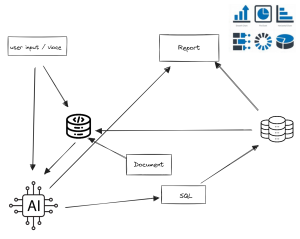
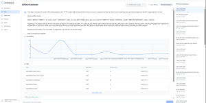

Unlocking Business Insights with AI-Driven Text-to-SQL Meets Modern BI
In today’s data-driven enterprises, business users are often faced with a paradox: vast amounts of data across multiple systems, but limited ability to turn it into actionable insights without depending heavily on IT or data experts. Traditional BI tools require knowledge of data models, SQL queries, or reporting structures, which creates a barrier for everyday decision-makers.
This is where AI-driven reporting systems come into play—bridging the gap between business questions and technical complexity.
What Is an AI-Driven Reporting System?
At its core, the solution empowers business users to generate interactive reports, charts, and tables simply by using natural language input or even voice commands. Whether you type “Show me last month’s production efficiency by plant” or say it aloud, the system interprets your intent, converts it into a SQL query using Text2SQL technology, and retrieves the right data from your connected databases.
From there, the system presents the information in the form of dynamic charts, tables, or exportable reports, making insights both easy to consume and ready to act on.

AI Driven BI ReportKey Capabilities That Transform BI
1. Natural Language & Voice Querying
No need to know SQL syntax or database structures. Users ask questions in plain business terms, and the system automatically generates the right queries.
2. Multi-System Connectivity
Businesses rarely operate with a single data source. This system connects seamlessly to multiple databases—MES, ERP, CRM, or any other—enabling unified reporting without switching between tools.
3. Smart Vector Document Cataloging
To improve accuracy and performance, the system creates vector-based catalogs of database schemas and subsets.
-
These catalogs map technical fields to business-friendly terms.
-
They are automatically generated from database connections, but can also include supplemental documentation.
-
The result is faster, more accurate Text2SQL conversion aligned with the business language.
4. Query Validation & Continuous Learning
Every generated SQL query can be validated before execution. Over time, the system learns from ranking and user feedback, improving the precision and reliability of future queries.
5. Session History & Reuse
Business users can revisit previous sessions, reuse queries, and simply refresh the data—saving time while maintaining consistent reporting formats.
6. Drill-Down Analytics
Reports aren’t static. Users can drill down from a high-level overview into granular details, uncovering trends, root causes, or hidden opportunities.
7. Flexible Output Formats
-
Export to PDF or Excel for sharing and offline analysis.
-
Generate formal reports to embed in workflows, dashboards, or compliance documentation.

AI Driven Business IntelligenceWhy This Matters for Business Users
The power of this system lies in democratizing data access:
-
Executives gain real-time insights without waiting for IT.
-
Operations teams analyze performance across plants directly from MES data.
-
Sales and customer teams query CRM information on demand.
-
Finance can tie ERP numbers with operational data for unified decision-making.
By removing the need for technical SQL skills, organizations enable faster decisions, broader adoption of BI, and better cross-functional collaboration.
Real-World Impact
Imagine a manufacturing operations leader asking:
"What were the top 5 downtime reasons in Plant A last quarter, and how did they impact production cost?"
Within seconds, the system delivers a ranked chart of downtime reasons, a cost impact analysis table, and allows the leader to drill down by machine, shift, or operator. No SQL. No IT tickets. Just insights on demand.
The Future of AI-Powered BI
AI-driven reporting is more than a convenience; it’s a strategic advantage. By combining:
-
Natural language interaction
-
Intelligent schema mapping
-
Multi-database integration
-
Self-improving precision through ranking and history
…businesses are unlocking new levels of agility in how they consume and act on data.
With the ability to query any connected system, generate validated reports, and export insights seamlessly, this solution represents the next generation of Business Intelligence—one that puts the power of data directly into the hands of decision-makers.
✅ Conclusion: The AI-driven reporting system transforms how businesses interact with their data. It eliminates technical barriers, speeds up insight generation, and supports a truly data-informed culture. Whether in manufacturing, sales, finance, or customer service, the future of reporting is conversational, intelligent, and business-centric.
If you are interested to the AI driven BI solution, please contact us.